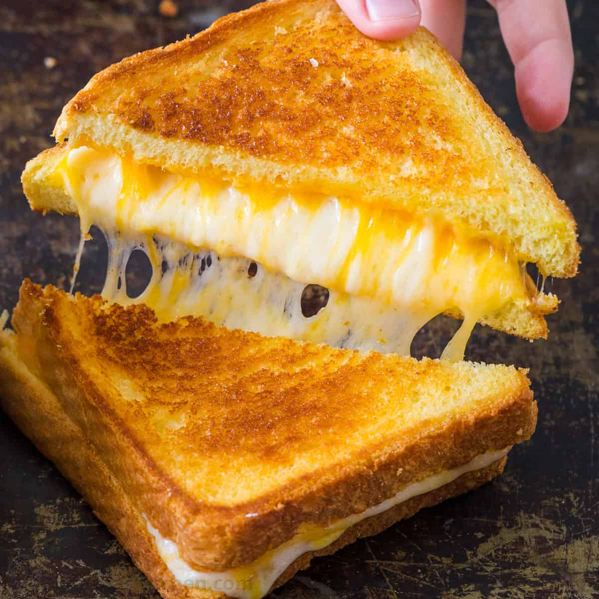

Grilled Cheese
Description
Timeless classic. Great with tomato soup, on a sunday afternoon. Mix it up with different cheeses or different fats for toasting the bread.
Ingredients
- Cheese - Measure with your heart
- Bread - 2 slices
- Butter
Instructions
- Spread butter over one side of the bread, and lay it in the pan
- Add cheese to first slice of bread
- Butter second slice of bread, and place over cheese
- Flip once first side is golden brown, being careful not to spill cheese.
Variations:
- None - Any additions to the inside of a grilled cheese removes it from the realm of grilled cheese and into the category of melt